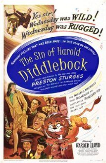

THE STANFORD THEATRE
Now Showing
·
Upcoming
·
Past
·
Search
April 7 - December 24, 2002
Fall Follies
26 bills
September 21 - 22
The Great McGinty (1940)
80 min
Stage Door (1937)
92 min
September 25 - 27
Christmas in July (1940)
67 min
Shall We Dance (1937)
109 min
September 28 - 29
Mr. Deeds Goes to Town (1936)
115 min
It Happened One Night (1934)
105 min
October 2 - 4
The Lady Eve (1941)
97 min
Baby Face (1933)
70 min
October 5 - 6
My Fair Lady (1964)
171 min
October 9 - 11
Sullivan's Travels (1941)
90 min
Dinner at Eight (1933)
111 min
October 12 - 13
Lost Horizon (1937)
97 min
Random Harvest (1942)
125 min
October 16 - 18
The Miracle of Morgan's Creek (1944)
99 min
The Cocoanuts (1929)
93 min
October 19 - 20
Gigi (1958)
119 min
The Reluctant Debutante (1958)
94 min
October 23 - 25
Hail the Conquering Hero (1944)
101 min
Animal Crackers (1930)
93 min
October 26 - 27
You Can't Take It with You (1938)
126 min
Duck Soup (1933)
68 min
October 30 - November 1

The Sin of Harold Diddlebock (1947)
90 min
Horse Feathers (1932)
64 min
November 2 - 3
Meet Me in St. Louis (1944)
113 min
Father of the Bride (1950)
92 min
April 7 - 9
Unfaithfully Yours (1948)
128 min
A Night at the Opera (1935)
87 min
November 9 - 10
Mr. Smith Goes to Washington (1939)
129 min
Harvey (1950)
104 min
November 13 - 15
Gun Crazy (1950)
87 min
Scarlet Street (1945)
103 min
November 16 - 17
The Band Wagon (1953)
113 min
Cabin in the Sky (1943)
98 min
November 20 - 22
Silk Stockings (1957)
117 min
Three Little Words (1950)
102 min
November 23 - 24
Bells Are Ringing (1960)
127 min
It Should Happen to You (1954)
86 min
November 27 - 29
The Gay Divorcee (1934)
107 min
42nd Street (1933)
89 min
November 30 - December 1
Laura (1944)
88 min
The Ghost and Mrs. Muir (1947)
104 min
December 6 - 8
Singin' in the Rain (1952)
103 min
December 9 - 15
Singin' in the Rain (1952)
103 min
December 20 - 22
The Shop Around the Corner (1940)
99 min
Miracle on 34th Street (1947)
96 min
December 23
The Shop Around the Corner (1940)
99 min
Miracle on 34th Street (1947)
96 min
December 24
It's a Wonderful Life (1946)
125 min